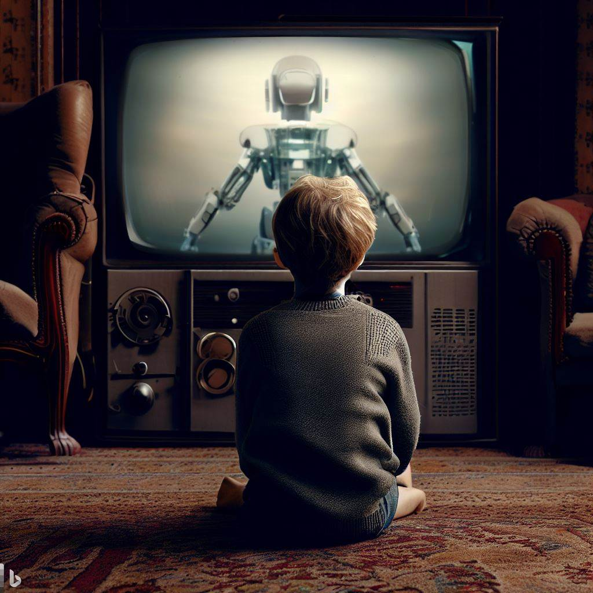

Discover a Fun Way to Learn a New Language: Boost Your Skills with Movies and TV Shows
Introduction: How I Learned a New Language through Movies
Growing up, I spent countless hours in front of the TV, watching movies from various genres—action, comedy, drama, sci-fi, horror, and mystery. What I didn't realize at the time was that this hobby would become the catalyst for learning my first foreign language. The translation delay in the movies I watched, caused by dubbing, ultimately became the key to acquiring a new language. This experience led me to discover the power of movies and TV shows as language learning tools, backed by recent research and supported by countless language learners worldwide.
Unlock the Secrets of Learning a New Language with Movies and TV Shows
Recent studies have continued to highlight the effectiveness of using movies and TV shows for language learning. For example, a study by Pujolà (2016) demonstrated that watching TV series with subtitles significantly improved listening comprehension and speaking skills in English as a Second Language (ESL) students. One participant in the study noted how watching her favorite sitcom helped her understand English humor and everyday expressions more effectively.
Another study by Safaei and Shokrpour (2021) found that using movies and TV shows in teaching English as a Foreign Language (EFL) led to significant improvements in vocabulary acquisition and language proficiency. Students in the study shared that watching movies based on their interests helped them learn new words in a fun and engaging way.
These real-life examples and research findings show that movies and TV shows can provide valuable language exposure and contextual learning opportunities.
The Movie Magic: Tips for Maximizing Language Learning through Movies and TV Shows
- Choose Your Adventure: Pick movies and TV shows that match your interests and proficiency level. This will keep you engaged and motivated. Start with content suitable for your current language proficiency and gradually progress to more challenging materials.
- Subtitle Savvy: Use subtitles strategically. Begin with subtitles in your native language, then switch to same-language subtitles as your proficiency improves. Experiment with alternating subtitles to challenge yourself further.
- Be an Active Watcher: Don't just passively watch. Take notes, repeat phrases, and pause to look up unfamiliar words. This active engagement will reinforce your learning and help you retain new information.
- Bonus Features: Leverage movie/TV show companion resources like scripts, language-specific discussion forums, or quizzes to enhance your learning experience.
- Consistency is Key: Establish a regular routine to maintain progress and motivation. Set aside specific times during the week for your movie or TV show-based language learning sessions.
Lights, Camera, Action: Recommendations for Language Learners
- Starting Strong: Begin with TV shows and movies designed for language learners, such as the curated content on FluentU, which provides an ideal learning environment for beginners.
- Level Up: Gradually progress to content made for native speakers, including popular movies, TV series, and documentaries, to expose yourself to various vocabulary, accents, and cultural contexts.
- Genre Hopping: Experiment with different genres to gain a diverse understanding of the language and its many nuances.
Conclusion: Embrace the Power of Movies and TV Shows in Your Language Learning Journey
Incorporating movies and TV shows into your language learning journey can provide a fun, engaging, and research-backed approach to acquiring a new language. By following the practical tips outlined above and remaining consistent in your efforts, you can unlock the full potential of this powerful learning tool.
References:
Pujolà, J.-T. (2016). Learning languages with films and Internet: The use of subtitles. Iberica, 32, 173-194. https://www.redalyc.org/articulo.oa?id=2871/287150504010
Safaei, S., & Shokrpour, N. (2021). The Impact of Using Movies on the Iranian EFL Learners’ Vocabulary Learning. Journal of Applied Linguistics and Language Research, 8(2), 139-153. http://jallr.com/index.php/JALLR/article/view/1231